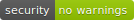
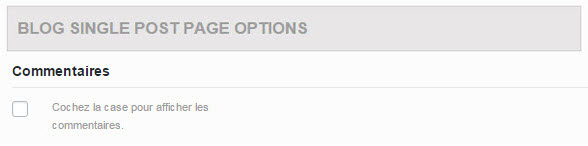
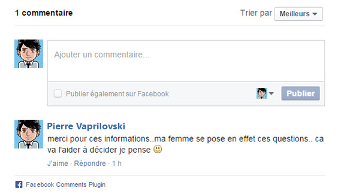
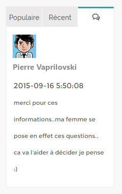

Viasocial | Advanced Social Plugin


Author : Viaprestige Web Agency
Package : Viasocial | Facebook class
Version : 1.0 Comma release @01/09/2015
Viasocial is a simple PHP plugin, that makes the possibility to fetch comments from facebook's database, using the Graph API. Viasocial is created specially for WordPress, under Avada template.
The Source of Ideas
Two weeks ago we decide to replace the default WordPress comments with facebook social plugin, so at this step everything is clear except that for example; we can't show the latest comments* in the sidebar, because that facebook social plugin is iframed, means that comments are outside website, and neither WordPress or WordPress's plugins can do that at this moment (no official methods). So we decide to make something simple & clean, then we have chosen PHP, and we avoided using jQuery.
The bases
- With the facebook's Graph API, we can get a json response from server to navigator, this response contains : comments count, shares count, likes count, comments, authors, date&time, author's ID...
- Viasocial gets these informations from navigator.
The Work Space
We choose WordPress as the best work space for our plugin, and we made it 100% compatible with Avada. For other templates : Our official 'Viasocial' plugin w'll be available soon at Wordpress.org. (we are working on it right now)
Functionalities
- Get Comments count for posts in website.
- Get Shares & Likes count.
- Get Comments, authors, date&Time, Author's ID, Post's ID, Profile picture.
- Share the current page in facebook, using share().
- Avoid installing unnecessary plugins in your website.
- Compatible with Avada .po .
- Fully customizable, with additional CSS class.
- Viasocial is crystal clear, and simple to manipulate.
Requirements
- Facebook comments plugin (JS).
- Wordpress & Avada updates.
Compatibility
Since Wordpress 4.2 & Avada 3.8.5
Components
Viasocial folder :
.viasocial
+-- class
| --- facebook.class.php
+-- assets
| +-- css
| +-- js
| +-- img
Avada folder :
.Avada 3.8.6
|+--.includes
| | +-- .viasocial
| | --- .class-fusion-widget-tabs.php
| | --- .class-fusion-widget-tabs.php.bak
Installation
Standard intagration (developers)
Include the facebook class in your project and make a call to it :
include_once('class/facebook.class.php');
$object = new Facebook();
Use function count('{option}') :
The object, is for example this article
$object->count('sourceId');
// Returns the object's ID
$object->count('commentsCount');
// Returns comments count
$object->count('sharesCount');
// Returns shares & likes count *
// * shares and likes are both counted in the same time
Use function fetch('{option},{limit}') :
$object->fetch('all','5');
// Returns full data : comment, author, date&time, limited by 5
$object->fetch('custom','5');
// Returns full data with custom profile picture
$object->fetch('authorId','5');
// Returns authors IDs
$object->fetch('author','5');
// Returns authors names
$object->fetch('picture','5');
// Returns user's profile picture
$object->fetch('message','5');
// Returns messages (comments)
$object->fetch('datetime','5');
// Returns date&time of publishing
$object->fetch('date','5');
// Returns date of publishing
$object->fetch('time','5');
// Returns time of publishing
Use function share() :
$object->share();
// Returns the current URL to share on Facebook*
See the demo.
Wordpress intagration (Avada)
-
Copy all contents of . / includes folder into your website :
/wp-content/themes/Avada/includesUsing FTP client.
In your WordPress backoffice / Theme options / blog / deactivate comments to turn on Viasocial.

-
Put this custom css in your style :
.via-picture-box{ float: left; margin-right: 15px; height: 50px; width: 50px; }
Demonstration
To run a demo, just put the main folder in your localhost WWW. then you have to edite facebook.class.php, by defining {url} :
// Debuging
// $this->settings['url'] = '{url}';
Installation via git
$ mkdir my-fantazy-sidebar
$ cd my-fantazy-sidebar
$ git clone https://github.com/Viaprestige/Viasocial
$ cd ..
$ start my-fantazy-sidebar
Preview
The comment :
The recent comments widget (avada)
